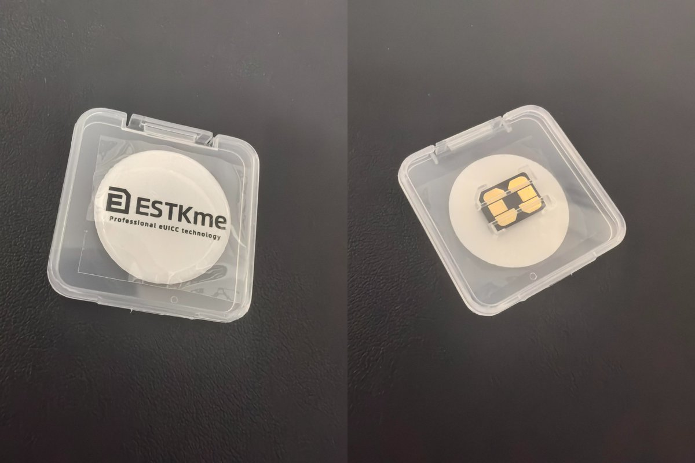
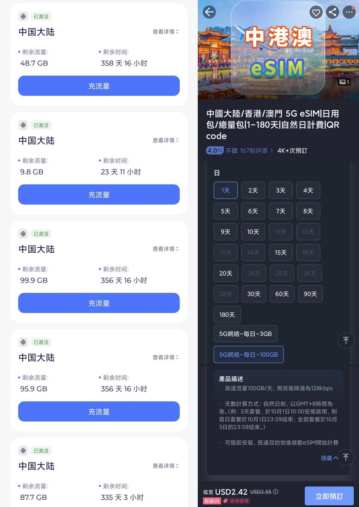
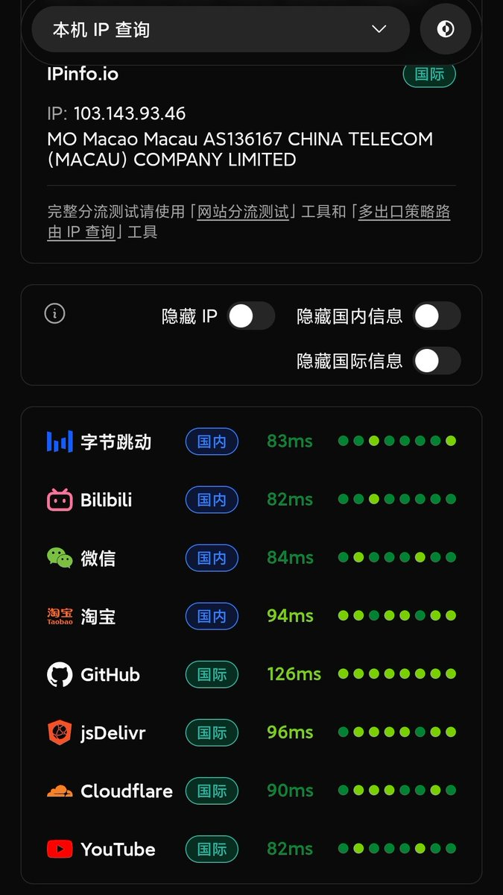

从不出国（境）有哪些eSIM推荐，这算是个老生常谈的话题，换句话说就是在国内用啥卡？
在回答这个问题之前，请确保手机支持eSIM功能，如果不支持也可以用9折优惠码NAIXI购买eSTK或9eSIM这类实体eSIM卡。就像给台式机装无线网卡，也没必要为了外卡买新机，转移eSIM也麻烦。
解决硬件问题后，接下来就是购买eSIM卡，商家一般会以二维码提供，也没啥好推荐的，在国内基本是香港或新加坡IP。除了老生常谈的RedteaGO、还有Trip上的旅行eSIM，长期套餐有半年和一年，甚至卷到1天100GB高速后限速只要17块（2.55刀），我反正觉得挺灵的。如果没用完就被限速，客服还会贴心给你新的二维码，但旧的还能用，也不知道他们赚不赚钱了！
不过这类流量卡都跟国内的物联卡差不多，没有号码的。相比于“翻墙”，这种方式上外网的延迟其实还蛮高的，数据先从境内运营商基站回源到本运营商，尤其是前阵子促销的CTExcel UK，在国内有些地方慢的连测速都测不出来，纯属中资运营商给英国EE打工的，纯量大管饱的垃圾卡。
在回答这个问题之前，请确保手机支持eSIM功能，如果不支持也可以用9折优惠码NAIXI购买eSTK或9eSIM这类实体eSIM卡。就像给台式机装无线网卡，也没必要为了外卡买新机，转移eSIM也麻烦。
解决硬件问题后，接下来就是购买eSIM卡，商家一般会以二维码提供，也没啥好推荐的，在国内基本是香港或新加坡IP。除了老生常谈的RedteaGO、还有Trip上的旅行eSIM，长期套餐有半年和一年，甚至卷到1天100GB高速后限速只要17块（2.55刀），我反正觉得挺灵的。如果没用完就被限速，客服还会贴心给你新的二维码，但旧的还能用，也不知道他们赚不赚钱了！
不过这类流量卡都跟国内的物联卡差不多，没有号码的。相比于“翻墙”，这种方式上外网的延迟其实还蛮高的，数据先从境内运营商基站回源到本运营商，尤其是前阵子促销的CTExcel UK，在国内有些地方慢的连测速都测不出来，纯属中资运营商给英国EE打工的，纯量大管饱的垃圾卡。


